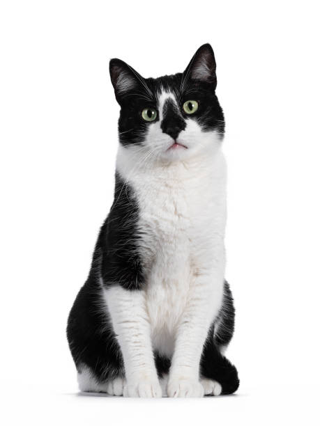

Kot domowy
Kot domowy – udomowiony gatunek ssaka z rzędu drapieżnych z rodziny kotowatych. Koty zostały udomowione około 9500 lat temu i są obecnie najpopularniejszymi zwierzętami domowymi na świecie. Gatunek ten prawdopodobnie pochodzi od kota nubijskiego, przy czym w Europie krzyżował się ze żbikiem. Przez IUCN/SSC jest uznawany za gatunek inwazyjny.
do anatomii kota
Przodkiem kota domowego jest kot nubijski – według poglądów większości współczesnych naukowców różnice pomiędzy kotem domowym i nubijskim są tak niewielkie, że należą one do tego samego gatunku. Istnieją rozbieżności w kwestii daty udomowienia kota. Większość źródeł sugeruje lata 4000–3700 p.n.e., a miejscem, w którym miało do tego dojść, była Nubia. Istnieją jednak dowody (grób mężczyzny z kotem z Cypru sprzed ok. 7500 r. p.n.e.), że domestykacja kota zaczęła się znacznie wcześniej (około 9500 lat temu) i trwała kilka tysięcy lat, a jej miejscem był obszar Żyznego Półksiężyca w Azji Zachodniej. Już ok. 2000 r. p.n.e. kot był pospolicie hodowany w starożytnym Egipcie, gdzie był zwierzęciem świętym, utożsamianym z boginią Bastet, a zwłoki kotów mumifikowano. Również Germanie kojarzyli go ze swoją boginią płodności Freją, która jeździła powozem zaprzężonym w te zwierzęta. Później zaczęto wykorzystywać go do tępienia gryzoni. Od momentu swego udomowienia kot stał się bohaterem licznych baśni i mitów. Wyhodowano wiele ras kota domowego, różniących się ubarwieniem, wielkością i długością włosów; współczesne wzorce niektórych starszych ras znacznie odbiegają od ich wcześniejszych cech (jak w przypadku kotów perskich czy syjamskich).
Koty żyjące w środowisku naturalnym dożywają średnio do 8 lat, natomiast koty trzymane w domu osiągają wiek około 14-17 lat. Na długość życia wpływa szereg czynników, takich jak: płeć, styl życia czy zwyczaje, jak i również kwestia sterylizacji lub kastracji. Najdłużej żyjącym kotem według Księgi rekordów Guinnessa była kotka imieniem Creme Puff z Teksasu (1967–2005), która przeżyła 38 lat i 3 dni. Małe kocięta rozwijają się szybko. Stają się w pełni samodzielne w wieku od 8 do 12 tygodni i wtedy mogą trafić do nowych właścicieli. Gdy mają około 3 miesięcy, kotka przestaje się nimi interesować i zmusza je do samodzielności. W wieku około 5 miesięcy kocięta wymieniają zęby na stałe. Dzieciństwo kończy się wraz z uzyskaniem dojrzałości płciowej. W tym okresie może pojawić się pierwsza ruja, a kot zaczyna oznaczać swoje terytorium. Wyraźne objawy starości pojawiają się zwykle po 7. roku życia: coraz częściej pojawia się kamień nazębny, słabnie wzrok, słuch i węch, stają się powolne oraz słabe. Stare koty są bardzo wrażliwe na zmiany środowiskowe i stres.
Koty są zoofagami, jednak badania wykazały, że koty potrafią efektywnie (>90%) trawić i wykorzystywać węglowodany prawie tak samo dobrze jak psy, są więc dla nich odpowiednim źródłem kalorii. Dzienna długość snu kota jest zmienna, zwykle śpią one od 12 do 16, średnio 13–14 godzin. Niektóre koty mogą spać nawet 20 godzin w ciągu doby. Normalna temperatura ciała kota waha się od 38 do 39 °C. Gorączka u kota występuje, gdy temperatura jego ciała przekracza 39,5 °C. Temperatura 37,5 °C oznacza hipotermię.Serce kota w normalnych warunkach bije od 140 do 220, a podczas odpoczynku od 150 do 180 uderzeńna minutę.
Zachowanie, pielęgnacja i opieka nad kotem:
Badania prowadzone przez naukowców z University of Illinois at Urbana-Champaign z użyciem nadajników radiowych pozwoliły stwierdzić, jak koty mieszkające z ludźmi i zdziczałe zachowują się w terenie.
Stwierdzono, że:
| cecha | kot mieszkający z ludźmi | kot zdziczały |
|---|---|---|
| część czasu poświęcona na odpoczynek | 80% | 62% |
| część czasu poświęcona na higienę | 17% | 24% |
| część czasu poświęcona na polowanie | 3% | 14% |
| obszar wędrówek | 0,3km² | 5,5km² |
| liczba badanych osobników | 18 | 24 |
Anatomia kota
Choć istnieje wiele różnych ras i rodzajów kotów, organizm każdego z nich funkcjonuje mniej więcej ten sam sposób. Koty przypominają budową ciała inne drapieżniki obdarzone szybkim refleksem i smukłą sylwetką. Dzięki temu mogą łatwo wymknąć się bardziej niebezpiecznym zwierzętom lub złapać zdobycz podczas polowania. Jeśli chcesz zrozumieć zachowanie i potrzeby swojego kota, zapoznaj się z jego anatomią (budową) i fizjologią (sposobem funkcjonowania).
Budowa kota
Budowa kota, podobnie jak innych kręgowców, oparta jest na wewnętrznym szkielecie. W przypadku tego gatunku liczy on 244 kości. Te dzielą się na kilka części: Czaszkę, kręgosłup, klatkę piersiową, kończyny przednie, kończyny tylnie
Emocje
Stan emocjonalny kota można odczytać, obserwując jego zachowanie. Ogon kota oprócz pomagania mu w utrzymaniu równowagi w chodzeniu na wąskich powierzchniach sygnalizuje również nastrój zwierzęcia. Ogon ustawiony na wprost oznacza, że kot jest spokojny. Ogon uniesiony pionowo do góry oznacza chęć kota do zabawy. Gdy zwierzę macha ogonem, oznacza to, że jest zdenerwowane, czyli inaczej niż jest to w przypadku psa. Machanie końcem ogona oznacza zainteresowanie, a jeżeli kot stoi przy tym na ugiętych łapkach – podniecenie, kiedy kot ma lekko najeżone włosy na karku i napuszony ogon jest poważnie zaniepokojony lub zdenerwowany sytuacją. Będąc rozdrażnionym może zaatakować innego osobnika. Kot uwielbia pogoń za szybko poruszającymi się przedmiotami i wchodzenie na drzewa, z których jednak z trudem schodzi. Świetnie też potrafi bawić się sam. Z braku gryzoni (np. w mieszkaniu, w mieście), aby zaspokoić swój instynkt łowiecki, poluje na owady, zwłaszcza latające.
Higiena
Koty nie używają, tak jak inne zwierzęta, jakichkolwiek zbiorników wodnych do mycia się. Czyszczą swoje futro kilkakrotnie w ciągu dnia, liżąc sierść, a tam gdzie nie sięgają językiem – zwilżoną językiem łapą, wycierają dokładnie całe ciało. Język kota jest szorstki (ma wiele małych „haczyków”, tzw. zębów rogowych języka), przez co skutecznie wygładza sierść, usuwa brud z futra i obumarłe włosy. Połykanie włosów w trakcie higieny może prowadzić do zakłaczenia, czyli powstawania pilobezoarów (zwanych także wypluwkami lub potocznie kłaczkami). W usunięciu zakłaczenia pomaga kotu jedzenie trawy oraz niektórych rodzajów surowego mięsa, dzięki czemu jego układ trawienny działa lepiej i nie jest zanieczyszczony.